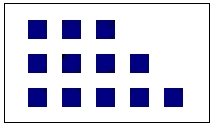
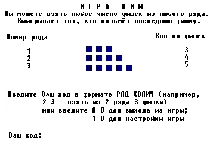

|
|
|
Игра ним
Ним - одна из самых старых и увлекательных математических игр. Для игры в ним необходим партнер (в ним играют вдвоем), стол и набор фишек. В качестве фишек обычно используются камешки или монетки. В наиболее известном варианте нима 12 фишек раскладываются в три ряда так, как показано на рис. 2.3.

Рис.2.3. Фишки, расположенные для игры в ним по схеме 3-4-5
Правила нима просты. Игроки по очереди забирают одну или несколько фишек из любого ряда. Не разрешается за один ход брать фишки из нескольких рядов. Выигрывает тот, кто возьмет последнюю фишку (фишки).
Если Вы сыграете несколько партий в ним, то скоро заметите, что существует некоторая оптимальная последовательность ходов, которая гарантирует победу, если только Вы начинаете игру и первым ходом берете две фишки из первого ряда. Любой другой ход даст шанс Вашему сопернику, который в этом случае наверняка победит, если, в свою очередь, воспользуется оптимальной стратегией.
Полный анализ игры с обобщением на любое число рядов с любым числом фишек в каждом ряду впервые опубликовал в 1901 г. профессор математики из Гарвардского университета Чарльз Л.Бутон, который и назвал игру «ним» от устаревшей формы английских глаголов «стянуть», «украсть». Открытая им оптимальная стратегия основана на двоичной системе счисления и довольно проста. Каждую комбинацию фишек Бутон назвал либо опасной, либо безопасной: если позиция, создавшаяся после очередного хода игрока, гарантирует ему победу, она называется безопасной, если такой гарантии нет - опасной. Бутон строго доказал, что любую опасную позицию всегда можно превратить в безопасную нужным ходом. Наоборот, если перед очередным ходом игрока уже сложилась безопасная позиция, то любой его ход превращает позицию в опасную. Таким образом, оптимальная стратегия состоит в том, чтобы каждым ходом опасную позицию превращать в безопасную и заставлять противника «портить» ее. Использование оптимальной стратегии гарантирует победу игроку только тогда, когда он открывает партию и начальная позиция фишек опасна или он делает второй ход, а начальная позиция безопасна.
Чтобы определить, опасна позиция или безопасна, нужно количество фишек в каждом ряду записать в двоичной системе счисления. Если сумма чисел в каждом столбце (разряде) равна нулю или четна, позиция безопасна. Если же сумма нечетна хотя бы в одном разряде, то позиция опасна. Например, для начальной позиции по схеме 3-4-5 получим:
| Десятичная запись количества фишек | Двоичная запись количества фишек |
| 3 | 011 |
| 4 | 100 |
| 5 | 101 |
Сумма по разрядам 212
Сумма цифр в среднем столбце равна 1 - нечетному числу, что свидетельствует об опасности этой позиции. Поэтому первый игрок может сделать ее безопасной для себя, если он возьмет две фишки из первого ряда. В результате в первом ряду остается только 1 фишка (двоичное число также 1), и сумма чисел в среднем столбце изменится на ноль.
В привычной нам десятичной системе счисления емкость каждого разряда равна 10, а для записи значений разряда используются цифры от 0 до 9. В двоичной системе счисления емкость каждого разряда равна 2, а из всех цифр используются только 0 и 1. В этой системе число записывается в виде суммы степеней двойки и при переходе от одного разряда к соседнему левому вес разряда увеличивается в 2 раза. Если нужно записать число 2 в двоичной системе, следует действовать точно так же, как при записи числа 10 в десятичной системе: записать ноль в первом (младшем) разряде и единицу - слева от него, т.е. 10 в двоичной системе означает 2 в десятичной системе. Точно так же 100 в двоичной системе означает 4 в десятичной, 1000 - 8 и т.д.
Для перевода любого целого положительного числа из десятичной системы в двоичную можно использовать прием последовательного деления числа на 2. Например, для перевода десятичного числа 11 в двоичную систему используется такая цепочка делении:
|
Делимое |
Результат |
Остаток |
| 11 | 5 | 1 |
| 1 | 2 | 1 |
|
2 |
1 |
0 |
Если, начиная с последнего результата, остатки от деления записать в обратном порядке, получим 1011 - это и есть двоичное представление десятичного числа 11. В этом легко убедиться, записав двоичное число 1011 как сумму степеней 2:
1х23+1х22+1х21+1 = 11
Попробуем разработать программу, которая будет выполнять роль партнера в игре, причем это будет весьма опасный противник, так как он будет «знать» оптимальную стратегию и умело ею пользоваться.
Представим себе на минутку, что Вы уже создали программу и начинаете работу с ней. Как организовать удобное взаимодействие с программой? Конечно, возможно простейшее решение: Вы предварительно раскладываете на столе монетки, по запросу программы вводите в нее Ваш ход, затем читаете на экране ход программы, делаете нужные изменения в раскладке монет и т.д. Вряд ли Вас удовлетворит такая программа. Гораздо эффектнее имитировать на экране игровое поле с фишками и своеобразное табло игры, в котором сообщается об очередных ходах противников. Однако использованные ранее средства вывода данных (процедуры WRITE и WRITELN) недостаточны для этих целей, ведь с их помощью нельзя указать конкретное место на экране, куда нужно поместить выводимую информацию. Вывод этими процедурами всегда начинается с той позиции на экране, которую в данный момент занимает курсор. Следовательно, для вывода текста в нужное место экрана требуется перед обращением к этим процедурам изменить положение курсора. Для этих целей служит процедура GOTOXY, которая хотя и является стандартной, но располагается в отдельной библиотеке (модуле) с именем CRT. Подробнее о модулях мы поговорим в гл.9, а сейчас просто учтем, что процедуры и функции из дополнительных библиотек становятся доступны в программе, если в самом ее начале объявить об их использовании. Так, указание об использовании библиотеки CRT делается таким образом:
Uses CRT;
После такого указания программе становятся доступны дополнительные процедуры и функции, с помощью которых можно организовать гибкое управление текстовым экраном, в том числе процедура GOTOXY, перемещающая курсор в произвольное место на экране.
Теперь попробуем составить алгоритм главной программы. В простейшем виде он таков:
Uses CRT; {Подключение библиотеки дополнительных процедур и функций для управления экраном}
var
exit: Boolean; {Признак окончания работы}
begin
{Подготовить экран к работе}
repeat
{Ввести, проконтролировать и отобразить ход игрока}
{Найти и отобразить ход программы}
until exit
end.
В этом алгоритме выделяются три главных действия и организуется цикл, который будет выполняться до тех пор, пока где-то в программе переменной EXIT (выход) не будет присвоено значение TRUE.
Вначале экран подготавливается к работе: формируется игровое поле с фишками и выводится информация о правилах игры. Как уже говорилось, ним позволяет играть с произвольным количеством фишек. Разумно ввести в программу возможность, которая бы позволила пользователю самому указывать число рядов и количество фишек в рядах, т.е. настраивать программу на нужную раскладку фишек. Можно несколько модифицировать главную программу, чтобы предусмотреть эту возможность:
Uses CRT; {Подключение библиотеки дополнительных процедур и функций для управления экраном}
var
exit : Boolean; {Признак окончания работы}
change : Boolean; {Признак изменения условий игры}
{----------------------}
Procedure Prepare; {Готовит экран к игре}
begin {Prepare}
end; {Prepare}
{----------------------}
Procedure GetPlayerMove;
{Получает, контролирует и отображает ход игрока}
begin {GetPlayerMove}
end; {GetPlayerMove}
{----------------------}
Procedure SetOwnerMove;
{Находит и отображает очередной ход программы}
begin {SetOwnerMove}
end; {SetOwnerMove}
{----------------------}
begin {Главная программа}
{Подготовить начальную расстановку фишек}
repeat {Цикл изменения условий игры}
Prepare; {Подготовить экран}
repeat {Игровой цикл}
GetPlayerMove; {Получить ход пользователя}
if not (exit or change) then
SetOwnerMove {Определить собственный ход} until exit or change
until exit
end.
В этом варианте главная программа содержит два вложенных друг в друга цикла Repeat. . .Until: внутренний цикл управляет игрой, внешний отвечает за изменение условий игры. Оба цикла управляются двумя логическими переменными, которые являются глобальными для трех основных процедур PREPARE, GETPLAYERMOVE, SETOWNERMOVE и, следовательно, могут изменяться внутри этих процедур.
Теперь настал момент подумать о том, каким способом в программе будет храниться и использоваться информация о текущем состоянии игры. Судя по всему, нам понадобятся хотя бы две переменные: в одной, назовем ее NROW, будет содержаться число рядов фишек, в другой (NCOL) - количество фишек в каждом ряду. Переменная NROW содержит одно целое положительное число, поэтому ее тип должен быть INTEGER. В переменной NCOL должно быть не менее NROW целых чисел, т.е. ее тип - это массив целых чисел. Поскольку в программе предусмотрена возможность изменения условий игры самим игроком, переменная NROW может меняться от партии к партии. В соответствии с этим должна была бы меняться и длина массива NCOL. Однако в Турбо Паскале нельзя использовать массивы, длина которых меняется динамически, т.е. в процессе работы программы. Эта длина должна определяться статически (на этапе компиляции) и не может меняться в работающей программе. Значит, понадобится массив достаточно большой длины, чтобы его хватило на все случаи. На экране одновременно можно отобразить максимум 25 строк по 80 символов в каждой строке. Однако использовать все строчки экрана как возможные ряды фишек вряд ли целесообразно: во-первых, сама игра при большом количестве рядов становится неинтересной, так как игрок не сможет проанализировать в уме все варианты ходов; во-вторых, на экране не останется места для вывода другой информации. Будем считать, что максимальное количество рядов фишек не должно превышать 14. Укажем это константой MAXROW - теперь, если Вы захотите назначить другое максимальное количество рядов, понадобится изменить значение этой константы и перекомпилировать программу. Именно таким способом программам придается дополнительная гибкость: Вы сосредоточиваете в нескольких константах параметры, которые выбраны Вами произвольно и которые Вы или кто-то другой, возможно, захочет изменить. Все размерности массивов или другие особенности программной реализации следует определять через эти константы, тогда процедура переделки программы предельно упростится.
С учетом сказанного назначим следующие глобальные константы и переменные:
const
MAXROW = 14; {Максимальное количество рядов}
MAXCOL = 20; {Максимальное количество фишек в ряду}
type
ColType= array [I..MAXROW] of Integer;
var
exit :Boolean; {Признак окончания работы}
change:Boolean; {Признак изменения условий игры}
nrow :Integer; {Количество рядов}
ncol :ColType; {Максимальное колич-во фишек по рядам}
col :ColType; {Текущее количество фишек по рядам}
Константа MAXCOL не участвует в формировании массивов, она будет использоваться для контроля горизонтальных размеров игрового поля. Поэтому она, а также пять переменных сделаны глобальными. Если считать, что начальная раскладка фишек соответствует схеме 3-4-5, то можно написать такой окончательный вариант главной программы:
Uses CRT; {Подключение библиотеки дополнительных процедур и функций для управления экраном}
|
const |
|
|
MAXROW = 14; |
{Максимальное количество рядов} |
|
MAXCOL =20; |
{Максимальное количество фишек в ряду} |
|
type |
|
|
ColType = array |
[1.. MAXROW] of Integer; |
|
var |
|
|
exit : Boolean; |
{Признак окончания работы} |
|
change : Boolean; |
{Признак изменения условий игры} |
|
nrow : Integer; |
{Количество рядов.} |
|
ncol : ColType; |
{Максимальное колич-во фишек по рядам} |
|
col : ColType; |
{Текущее количество фишек по рядам} |
{------------------------}
Procedure Prepare; {Готовит экран к игре}
begin {Prepare}
end; {Prepare}
{------------------------}
Procedure GetPlayerMove;
{Получает, контролирует и отображает ход игрока}
begin {GetPlayerMove}
end ; {Get PlayerMove}
{------------------------}
Procedure SetOwnerMove;
{Находит и отображает очередной ход программы}
begin {SetOwnerMove}
end; {SetOwnerMove}
{------------------------}
begin {Главная программа}
nrow := 3; {Готовим игру... }
ncol [1]:= 3; { на поле из трех }
ncol [2]:= 4; { рядов фишек }
ncol [3]:= 5; { по схеме 3-4-5.}
repeat {Цикл изменения условий игры}
Prepare; {Подготовить экран}
repeat {Игровой цикл}
GetPlayerMove; {Получить ход пользователя}
if not (exit or change) then
SetOwnerMove {Определить собственный ход}
until exit or change
until exit
end.
Приступим к конструированию процедуры PREPARE. В ходе ее работы формируется значение переменной COL, соответствующее начальной раскладке фишек, и выводится информация о правилах игры. Чтобы было понятнее дальнейшее описание программной реализации, на рис. 2.4 показан вид экрана в начальном состоянии игры.
Процедура начинает свою работу с очистки экрана от имеющейся на нем информации. Это достигается обращением к стандартной процедуре без параметров CLRSCR. Затем выводятся три строчки с названием игры и кратким описанием ее правил. Кроме того, слева и справа на экране формируются заголовки для двух колонок цифр, в которых затем будут отображаться номер ряда (слева) и текущее количество фишек в ряду (справа). Эта информация поможет игроку сообщить программе свой ход. Для размещения информации на нужных участках экрана используется процедура GOTOXY(X,Y) , с помощью которой курсор перемещается нужным образом. Параметры X и Y этой процедуры задают новые координаты курсора. Начало координат соответствует точке (1,1) и размещается в левом верхнем углу экрана, поэтому горизонтальная координата увеличивается слева направо, а вертикальная - сверху вниз.

Рис.2.4. Вид экрана в начале игры ним
Procedure Prepare;
{Подготовка данных и экрана к игре}
const
Header0 = 'ИГРА НИМ';
Headerl = 'Вы можете взять любое число фишек из любого ряда.';
Header2 = 'Выигрывает тот, кто возьмет последнюю фишку.';
Headers = 'Номер ряда';
Header4 = 'Количество фишек';
var
i : Integer; begin {Prepare}
ClrScr; {Очищаем экран}
{Выводим строки заголовка:}
GotoXY((80-Length(Header0)) div 2,1);
Write(HeaderO) ;
GotoXY((80-Length(Headerl)) div 2,2);
Write(Headerl);
GotoXY((80-Length(Header2)) div2,3);
Writeln(Header2);
Write(Header3);
GotoXY(80-Length(Header4),4);
Write(Header4);
{Готовим начальную раскладку:}
for i := 1 to nrow do
col [i] := ncol[i]
end; {Prepare}
Для вывода верхних строк строго посередине экрана используется задание горизонтальной координаты курсора для процедуры GotoXY как половины от разницы между полной длиной экрана (80 позиций) и длиной выводимой строки (определяется с помощью функции LENGTH).
В процедуре GetPlayerMove осуществляются ввод, контроль и отображение на экране очередного хода игрока. Предварительно нужно показать игроку текущее состояние игрового поля. Поскольку поле будет обновляться как минимум дважды (после хода игрока и после хода программы), действия, связанные с изображением поля на экране, следует вынести в отдельную процедуру. Назовем ее ShowField и займемся ее реализацией.
Судя по всему, нам понадобится организовать цикл; в ходе цикла для каждого ряда игрового поля будет выведена строка, в левой части которой указывается номер ряда, в правой - текущее количество фишек в нем, а посередине выводятся символы, имитирующие фишки. В принципе, можно выбрать любой символ ПК для обозначения фишки, например, X или О. Я предпочел воспользоваться символом псевдографики с кодом 220: этот символ представляет собой небольшой квадратик и легко ассоциируется с фишкой.
Procedure ShowField;
{ Отображает на экране текущее состояние игрового поля }
const
FISH = #220; {Символ-указатель фишки}
Х0 = 4; {Левая колонка номеров рядов}
X1 =72; {Правая колонка количества фишек}
X = 20; {Левый край игрового поля}
var
i,j : Integer;
begin {ShowField}
for i := 1 to nrow do begin
GotoXY(X0,i+4);
Write(i); {Номер ряда}
GotoXY(X1,i+4);
Write(col[i]:2); {Количество фишек в ряду}
for j := 1 to ncol[i] do {Вывод ряда фишек:}
begin
GotoXY(X+2*j,i+4); if j[i] then
Write(FISH)
else
Write('.')
end
end
end; {ShowField}
Символы FISH (квадратики) выводятся через одну позицию, чтобы не сливались на экране. В те позиции, в которых ранее стояли уже снятые с поля фишки, выводится точка.
Теперь вернемся к процедуре GETPLAYERMOVE. При вводе любого очередного хода игрок должен задать два целых числа X1 и Х2. Первое из них указывает номер ряда, а второе - количество фишек, которые игрок хочет забрать из этого ряда. Программа должна проконтролировать правильность задания этих чисел: X1 должно указывать непустой ряд, Х2 не может превышать количество фишек в этом ряду. Кроме того, мы должны условиться о двух особых случаях:
Пусть ввод числа X1 =0 означает команду выхода из программы, а X1 = -1 - команду изменения условий игры. Тогда можно написать такой начальный вариант процедуры:
Procedure GetPlayerMove;
{Получает, контролирует и отображает ход игрока}
var
correctly : Boolean; {Признак правильности сделанного хода}
xl,x2 : Integer; {Вводимый ход}
begin {GetPlayerMove}
{Показываем начальное состояние игрового поля}
ShowField;
{Сообщаем, игроку правила ввода хода}
repeat
{Приглашаем игрока ввести ход}
ReadLn(xl,x2); {Вводим очередной ход}
exit := xl=0; {Контроль команды выхода}
change := xl=-l; {Контроль команды изменения}
if not (exit or change) then
{Проверить правильность хода и установить нужное значение переменной CORRECTLY. Если ход правильный, сделать нужные изменения в раскладке фишек и показать поле.}
else
correctly := true {Случай EXIT или CHANGE}
until correctly; if change then
{ Изменить условия игры }
end; {GetPlayerMove}
В этом варианте в процедуре GetPlayerMove нет описания процедуры SHOWFIELD. Сделано это не случайно: процедура ShowField может понадобиться также и при реализации процедуры SetOwnerMove, поэтому она должна быть глобальной по отношению и к GetPlayerMove, и к SetOwnerMove, т.е. ее описание должно в тексте программы предшествовать описаниям двух использующих ее процедур.
Действия
{ Сообщить игроку правила ввода хода } ,
{ Пригласить игрока ввести ход }
и
{Проверить правильность хода и установить нужное значение переменной Correctly. Если ход правильный, сделать нужные изменения в раскладке фишек и показать поле.}
не очень сложны в реализации, поэтому их можно осуществить непосредственно в теле процедуры GETPLAYERMOVE. Иное дело - изменение условий игры. Это действие полезно реализовать в отдельной процедуре GETCHANGE. С учетом этого второй вариант процедуры GETPLAYERMOVE примет такой вид:
Procedure GetPlayerMove;
{Получает, контролирует и отображает ход игрока}
const
ТЕХТ1 = 'Введите Ваш ход в формате РЯД КОЛИЧ ';
ТЕХТ01= ' (например, 2 3- взять из 2 ряда 3 фишки) ' ;
ТЕХТ2 = 'или введите 0 0 для выхода из игры; ' ; .
ТЕХТ02= '-1 0 для настройки игры';
ТЕХТЗ = 'Ваш ход: ';
Y = 20; {Номер строки для вывода сообщений}
var
correctly : Boolean; {Признак правильности сделанного хода}
xl,x2 : Integer; {Вводимый ход}
{-----------------}
Procedure GetChange;
{Устанавливает новую настройку игры (количество рядов и количество фишек в каждом ряду}
begin {GetChange}
end; {GetChange}
{-----------------}
begin {GetPlayerMove}
ShowField; {Показываем начальное состояние поля}
{Сообщить игроку правила ввода хода:}
GotoXY((80-Length(TEXT1+TEXT01)) div2,Y);
Write(TEXT1+TEXT01);
GotoXY((80-Length(TEXT2+TEXT02)) div2,Y+l);
Write(TEXT2+TEXT02);
repeat
{Пригласить игрока ввести ход:}
GotoXY(l,Y+2);
Write(TEXTS); {Выводим приглашение и стираем предыдущий ход}
GotoXY(WhereX-16,Y+2); {Курсор влево на 16 позиций}
ReadLn(xl,x2); {Вводим очередной ход}
exit := xl=0; {Контроль команды выхода}
change := xl=-l; {Контроль команды изменения}
if not (exit or change) then
begin
correctly := (xl > 0) and (xl <= nrow) and (x2 <= col[xl]) and (x2 > 0) ;
if correctly then
begin {Ход правильный:}
col[xl] := col[xl]-x2; {Изменяем раскладку фишек}
ShowField {Показываем поле}
end
else
Write(#7) {Ход неправильный: дать звуковой сигнал}
end
else
correctly := true {Случай EXIT или CHANGE}
until correctly;
if change then
GetChange end; {GetPlayerMove}
Обратите внимание: константа
ТЕХТЗ = 'Ваш ход:
имеет длинный «хвост» из пробелов (их 17), поэтому после вывода этого приглашения курсор возвращается влево на 16 позиций оператором
GotoXY(WhereX-16,Y+2); {курсор влево на 16 позиций}
(функция WHEREX возвращает текущую горизонтальную координату курсора, а функция WHEREY - его вертикальную координату). Сделано это для того, чтобы в случае, если игрок ввел неверный ход и программа повторяет вывод приглашения, пробелы в константе ТЕХТЗ затерли бы строку предыдущего ввода.
Чтобы завершить создание процедуры GETPLAYERMOVE, нужно спроектировать процедуру GETCHANGE, в которой осуществляется изменение условий игры. Я привожу текст этой процедуры без пояснений и приглашаю Вас самостоятельно разобраться в том, как она работает:
Procedure GetChange;
{Устанавливает новую настройку игры (количество рядов и количество фишек в каждом ряду}
const
tl='HACTPOЙKA ИГРЫ';
t2 ='(ввод количества рядов и количества '+'фишек в каждом ряду)';
var
correctly : Boolean;
i : Integer; begin {GetChange}
ClrScr;
GotoXY( (80 -Length (tl) ) div2,l);
Write(tl) ;
GotoXY( (80 -Length (t2) ) div2,2);
Write (t2);
repeat
GotoXYd, 3) ;
Write ( 'Введите количество рядов (максимум ', MAXROW, '):');
GotoXY(WhereX-6,WhereY) ;
ReadLn (nrow) ;
correctly := (nrow <= MAXROW) and (nrow > 1) ;
if not correctly then
Write (#7)
until correctly;
for i := 1 to nrow do
repeat
GotoXY(l,i+3) ;
Write (' ряд ',i,', количество фишек (максимум ', MAXCOL , ' ) : ' ) ;
GotoXY (WhereX - 6 , WhereY) ;
ReadLn (ncol [i] ) ;
correctly := (ncol [i] <= MAXCOL) and (ncol[i] > 0) ;
if not correctly then
Write (#7)
until correctly
end; {GetChange}
Переходим к конструированию процедуры SETOWNERMOVE, в которой программа должна проконтролировать текущую ситуацию на игровом поле и выбрать собственный ход. Работа процедуры начинается с подсчета числа непустых рядов. В зависимости от этого подсчета реализуются следующие действия:
Procedure SetOwnerMove;
{Находит и отображает очередной ход программы}
{-----------------}
Function CheckField : Integer;
{Проверяет состояния игры. Возвращает 0, если нет ни одной фишки (победа игрока) , 1 - есть один ряд (победа машины) и - количество непустых рядов в остальных случаях}
begin {CheckField}
end; {CheckField}
{-----------------}
Procedure PlayerVictory;
{Поздравить игрока с победой и усложнить игру}
begin {PlayerVictory}
end; {PlayerVictory}
{-----------------}
Procedure OwnVictory;
{Победа машины}
begin {OwnVictory}
end; {OwnVictory}
{-----------------}
Procedure ChooseMove;
{Выбор очередного хода}
begin {ChooseMove}
end; {ChooseMove}
{-----------------}
begin {SetOwnerMove}
case CheckField of {Проверяем количество непустых рядов}
0 : PlayerVictory; {Все ряды пусты - победа игрока}
1 : OwnVictory; {Один непустой ряд - победа машины}
else
ChooseMove; {Выбираем очередной ход}
end; {case}
end; {SetOwnerMove}
Функция CHECKFIELD и процедуры PLAYERVICTORY и OWNVICTORY достаточно просты и их текст помещается без каких-либо пояснений в окончательный вариант программы (см. прил.5.3). Отмечу лишь, что в случае победы игрока нет смысла повторять партию заново с той же самой раскладкой фишек. Поэтому игра усложняется: в исходную раскладку добавляется еще по одной фишке в каждый ряд.
В процедуре CHOOSEMOVE анализируется позиция и выбирается очередной ход программы. Описание оптимальной стратегии уже приводилось выше. Действия программы заключаются в поиске первого слева (старшего) двоичного разряда, для которого сумма чисел нечетная. Если такой разряд не обнаружен, то текущая позиция безопасна для игрока, а значит любой ход программы сделает ее опасной. В этом случае для программы не существует оптимального выбора и она лишь убирает одну фишку из любого непустого ряда. Такая тактика означает пассивное ожидание ошибки игрока.
Если обнаружен разряд i с нечетной суммой, программа приступает к реализации оптимальной стратегии и тогда игрок обречен на поражение. Для выбора ряда, из которого следует взять фишки, программа просматривает последовательно все ряды и отыскивает тот ряд j, количество фишек в котором (в двоичном представлении) дает единицу в разряде i. Значение этого разряда для количества фишек в ряду j заменяется нулем. Затем программа продолжает подсчет суммы для оставшихся младших разрядов. Если в каком-либо из них вновь обнаружена нечетность, значение этого разряда для количества фишек в рядуj инвертируется, т.е. 0 заменяется на 1, а 1 на 0. Например, если двоичные представления числа фишек и четности сумм таковы:
число фишек в ряду j: 01001
четность сумм: 01011
(единицей указаны разряды с нечетными суммами), то в результате этой операции получим:
число фишек в ряду j: 00010
четность сумм: 00000
Таким образом, в исходном состоянии в ряду j было 1001 =9 фишек, безопасная позиция требует, чтобы в ряду осталось 0010 = 2 фишки, следовательно, из него нужно забрать 9-2 = 7 фишек.
Окончательный вариант программы представлен в прил.5.3. Попробуйте разобраться в ее деталях самостоятельно.
В программной реализации алгоритма широко используется то обстоятельство, что Ваш компьютер, как и все остальные вычислительные машины, работает с числами, представленными в двоичной системе счисления. Поэтому для получения двоичного представления числа в процедуре BITFORM оно проверяется на четность с помощью стандартной функции ODD, затем сдвигается вправо на один двоичный разряд (операция SHR), вновь осуществляется проверка на четность и т.д. до тех пор, пока не будут проверены все разряды. Максимальное число двоичных разрядов, достаточное для двоичного представления количества фишек в ряду MAXCOL=63, задается константой ВIТ=6.
Для получения суммы двоичных разрядов в процедуре CHOOSEMOVE используется суммирование разрядов по модулю 2 с помощью операции XOR. Такое суммирование дает 0, если количество единиц четное или равно нулю, и 1 - если нечетное. В этой же процедуре для инверсии двоичного разряда применяется оператор
if nbit[i] = 1 then
ncbit[j,i] := ord(ncbit[j,i]=0); {Инверсия разрядов},
в котором используется соглашение о внутреннем представлении логических величин в Турбо Паскале: 0 соответствует FALSE, а 1 - TRUE.
|
|
|